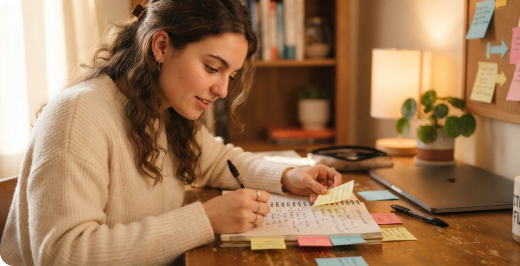

Cómo empezar cuando tienes demasiados pendientes
Ordena lo urgente, elige un primer paso y recupera sensación de avance.
- Escribe la entrega que más te preocupa.
- Divídela en investigar, producir y revisar.
- Elige una primera acción que puedas iniciar hoy.